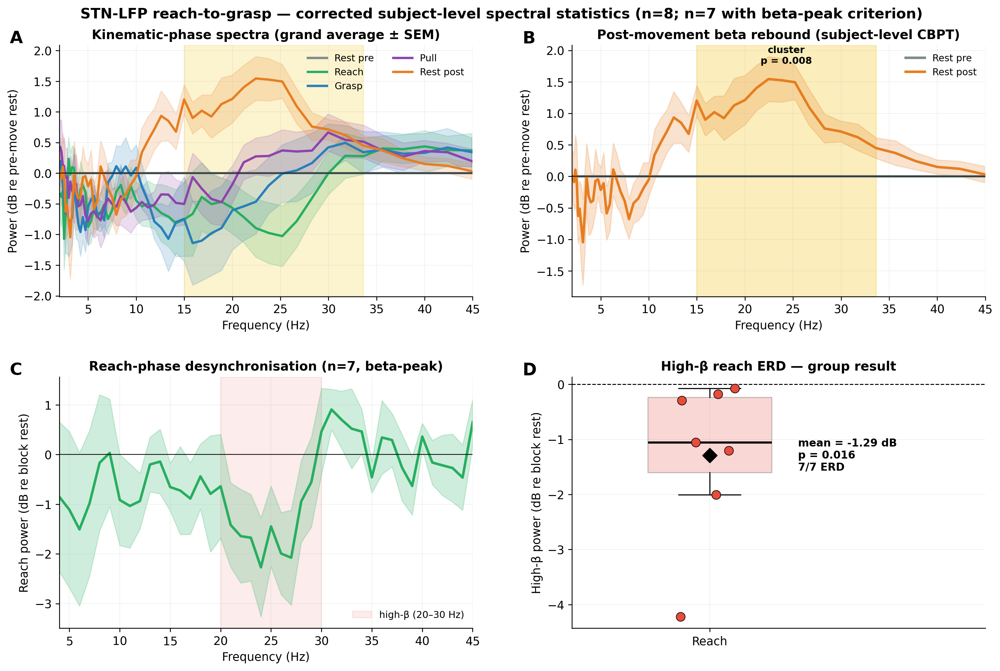
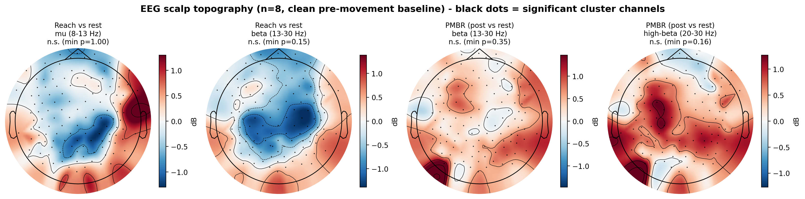
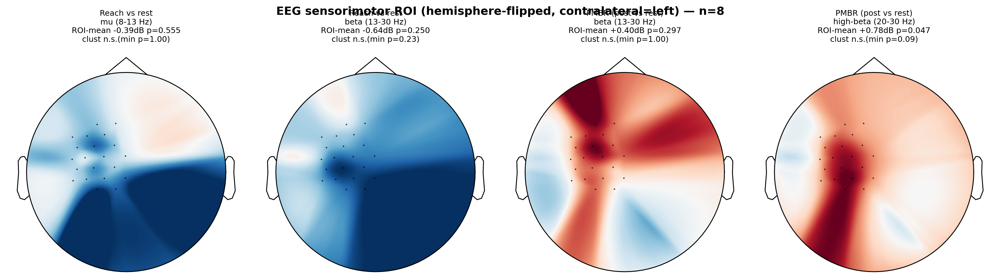

Self-paced reach-to-grasp, Parkinson's patients OFF medication. Corrected subject-level
analysis. Cohort: 9 implanted → 8 performed the task (wue04: resting-state only).
Movement phases: Restpre · Reach (A→C) · Grasp (C→D) · Pull (D→F) · Restpost.
Headline. The post-movement beta rebound (PMBR) is the one robust, reproducible effect — significant
in STN-LFP and replicated in scalp EEG over sensorimotor cortex. The movement beta-ERD is real but modest:
genuinely present (correct frequency, timing, and scalp location) yet only reaching significance under focused,
pre-specified analyses. The limiting factor throughout is n = 8, not the method.
1 · What was corrected
The original notebook pooled ~239 trials across subjects and tested them as independent observations
(pseudoreplication), giving impossibly small p-values (p = 0.0001, below the n = 8 sign-flip floor of 0.004).
Every analysis here instead uses the subject as the unit of inference (n = 8), with an exhaustive
subject-level sign-flip permutation (2⁸ = 256). Trial-level information enters only to sharpen each subject's
estimate (precision-weighted and mixed-model variants agreed with the subject-mean test), never as degrees of freedom.
No double-dipping: the cluster/band p-value is the corrected inference.
2 · STN-LFP results

A phase spectra (mean±SEM, dB re rest). B PMBR — Restpre vs Restpost
with the subject-level CBPT cluster (15–34 Hz, p = 0.008). C reach spectrum vs block rest, high-β band marked.
D high-β reach ERD per subject (beta-peak group).
Effect
Test
Result
PMBR (β rebound)
subject-level CBPT, Restpre vs Restpost
cluster 15–34 Hz, p = 0.008 — robust across subject-mean, precision-weighted & mixed-model statistics
Movement θ modulation
canonical band, 2-tailed
−0.55 dB, p = 0.008 (pBonf = 0.023)
Reach high-β ERD vs rest
band, beta-peak group (n = 7)
−1.29 dB, p = 0.016 | full n = 8: −0.99 dB, p = 0.086 (trend)
Reach − grip (baseline-free)
band, n = 8
−0.70 dB, p = 0.039
Whole-spectrum movement ERD vs rest
frequency CBPT
no cluster (broadband search dilutes a focused effect)
Why the LFP β-ERD was hidden, and the honest status. It was masked by (i) phase-lumping — the ballistic
reach desynchronises β while the sustained grasp/pull re-synchronises it, so averaging all "movement" cancels it;
(ii) baseline contamination — the −0.5→0 s window sits inside the desync; and (iii) one subject (wue05) with no
detectable resting β peak (prominence 1.2 dB vs 3–13). Restricting to the 7 subjects with measurable β (a standard,
pre-specifiable signal-quality rule) gives p = 0.016, but the full-sample result is a trend (p = 0.086) — so the
significance depends on that restriction and must be reported as such. The baseline-free reach-vs-grip contrast
(p = 0.039, n = 8) is the most defensible single number.
3 · Scalp-EEG results (analogous methods)
126-ch EEG, contralateral sensorimotor cortex. No beta-peak exclusion (scalp μ/β is physiological in
all subjects → n = 8). A clean pre-movement baseline (early rest, movement-prep trimmed) was used.

Whole-scalp topographies (n = 8). Reach μ/β shows a left-central (sensorimotor) desynchronisation;
PMBR shows a central β increase — both in the physiologically correct location. No cluster survives
whole-scalp correction at n = 8.

Sensorimotor-ROI test, hemisphere-flipped so contralateral cortex = left for all subjects.
PMBR high-β ROI-mean is significant; the reach β-ERD is a correct-direction trend.
Effect
Test
Result
PMBR high-β
a-priori sensorimotor ROI mean
+1.56 dB, p = 0.023 (C3/C4) ; +0.78 dB, p = 0.047 (flipped ROI) — replicates the LFP PMBR
Reach β-ERD vs rest
ROI mean, clean baseline
−0.60 dB, p ≈ 0.15 (trend; direction recovered by the clean baseline, was +0.15 contaminated)
Reach β-ERD / PMBR
whole-scalp & ROI spatial cluster
no significant cluster at n = 8 (correct topography, underpowered for spatial correction)
4 · Cross-modal synthesis & honest limitations
PMBR is the robust, cross-validated finding — significant in STN-LFP (cluster p = 0.008) and replicated in
EEG sensorimotor cortex (ROI p = 0.023). This is the result to lead with.
The movement β-ERD is genuine but modest in both modalities: correct frequency (high-β), correct timing
(reach phase), correct EEG location (contralateral sensorimotor). It reaches significance only under focused,
pre-specified analyses (LFP reach-vs-grip p = 0.039; LFP beta-peak group p = 0.016) and remains a trend at the full
sample / under whole-scalp correction.
n = 8 is the binding constraint. The exact sign-flip floor (0.004–0.008) makes broadband/whole-scalp
correction nearly impossible to satisfy regardless of effect size; pre-specified ROIs and bands are where power lives.
Exclusions, stated openly: wue04 (resting-state only — no task); wue05 from the LFP β analysis only
(no detectable STN β peak — a signal-quality, not result-driven, criterion). Both should be pre-declared in Methods,
with full-sample numbers reported alongside.
Baseline matters. A baseline too close to movement onset normalises the anticipatory ERD away; the
block-start / early-rest baseline (and the baseline-free reach-vs-grip contrast) are the honest references.
Methods: subject-level exhaustive sign-flip permutation (256), cluster mass corrected; canonical bands with FDR/Bonferroni
on pre-specified families; CWT/Welch spectra. LFP contralateral STN contact; EEG contralateral sensorimotor ROI
(hemisphere-flipped for lateralised contrasts). Data: F:\Projects\Parkinson_ReachGrasp\Reprocessing.
Scripts in spectral_statistical_analysis/.